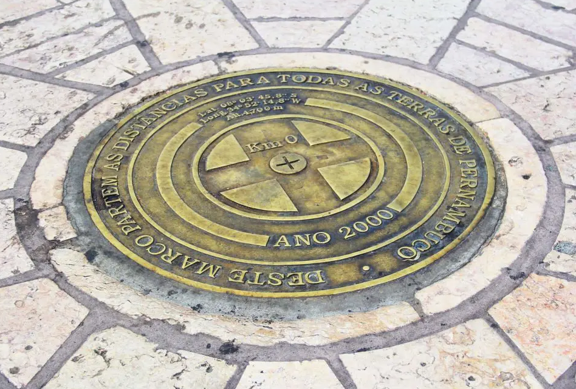
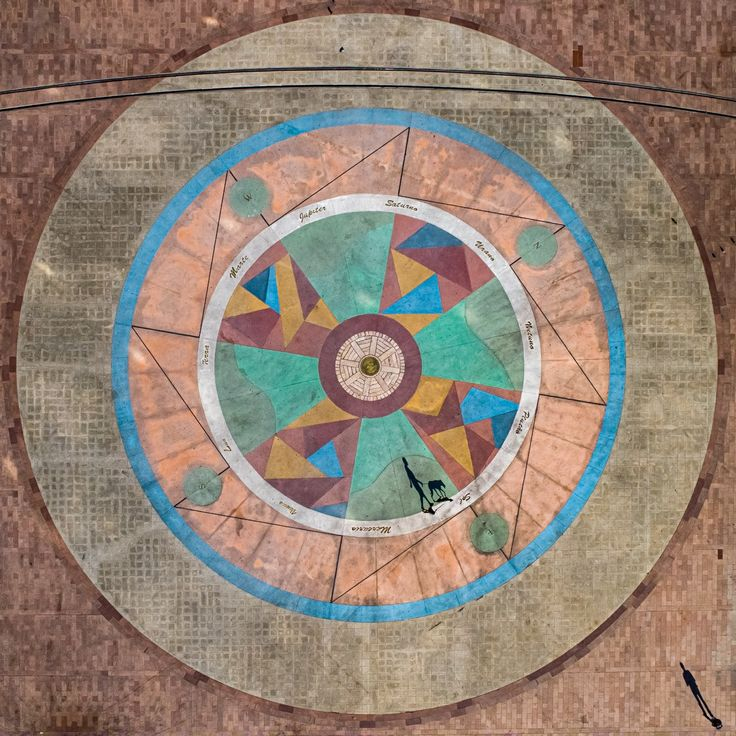
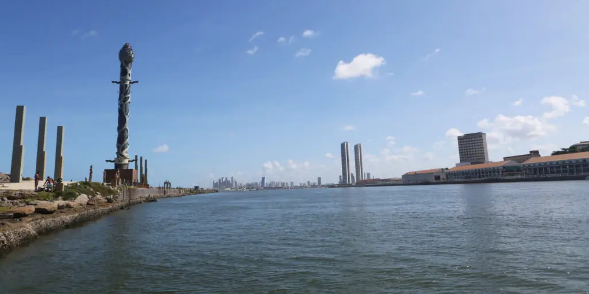

Conheça a Praça do Marco Zero
Parte da região histórica do Recife Antigo, a praça é o local de onde se inicia a medição das distâncias das
estradas do estado.
O Marco Zero é um dos pontos turísticos mais importantes para quem deseja conhecer a capital de Pernambuco.
Isso porque é um local de importância histórica que conta o nascimento da cidade e possui forte referência
cultural.
Além disso, o local recebe, anualmente, diversas comemorações e manifestações e também é um lugar muito
famoso para quem busca eventos como o Carnaval.
Saiba mais sobre esse importante local!
(Foto: Trip Advisor)
História
A praça é conhecida pelo seu nome popular, Praça do Marco Zero, mas na verdade o local se chama Praça Barão do Rio Branco. Está localizada no Bairro do Recife, o Centro Histórico da cidade, que também atende por outra alcunha, mais popular: Recife Antigo, por ser a parte onde se iniciou o povoamento da capital pernambucana.
Além de dar o nome oficial à praça, o Barão do Rio Branco também está representado no local por uma estátua em bronze de 2,80m de altura, feita pelo escultor francês Félix Charpentier.
O nome de Praça do Marco Zero se popularizou por conta da instalação, em 31 de janeiro de 1938, do Marco Zero de Recife, doado à cidade pelo Automóvel Clube de Pernambuco. A placa redonda posicionada na praça simboliza o centro geográfico de onde partem as medições para todas as estradas de Pernambuco.
Foto: Quinto Andar
Localização: A Praça Barão do Rio Branco, ou Praça do Marco Zero, está localizada na Av. Alfredo Lisboa, sem número.
Principais pontos turísticos ao redor
Rosa dos Ventos de Cícero Dias
(Foto: br.thptnganamst.edu.vn)
Em 1999, a Praça do Marco Zero passou por uma transformação drástica. A estátua do Barão do Rio Branco e o Marco Zero foram mudados de lugar, um pouco mais para o canto da praça.
Com isso, além de ser o centro geográfico de Pernambuco, o Marco Zero passou a ser o centro de uma obra de arte do célebre pintor pernambucano Cícero Dias, um dos mais importantes nomes do modernismo brasileiro: a Rosa dos Ventos.
Com 20 metros de diâmetro e formada por pedras de quartzo e granito com pigmentação colorida, a Rosa dos Ventos de Cícero Dias se tornou mais uma das grandes atrações da Praça do Marco Zero.
Parque das Esculturas Francisco Brennand
(Foto: Guga Matos | SeturPE)
De frente para a Praça do Marco Zero, sobre um dique natural que protege um estuário do Rio Capibaribe, foi construído em 2000 o Parque das Esculturas Francisco Brennand, que se tornou uma das maiores atrações turísticas da cidade.
O parque reúne dezenas de obras do artista plástico Francisco Brennand. A mais imponente delas é a Torre de Cristal, de 32 metros de altura, inspirada em uma flor descoberta pelo paisagista Roberto Burle Marx.
Para chegar ao Parque das Esculturas, é preciso fazer uma travessia de barco pelo Rio Capibaribe, com partida e retorno pela Praça do Marco Zero.
Endereço: Arrecifes do Porto, S/N, Bairro do Recife (Próximo ao Marco Zero)
Funcionamento: Diariamente, das 7h às 17h
Entrada: Gratuita (Mas é preciso pagar a travessia de barco, que custa R$ 10. O valor cobre a ida e a volta).